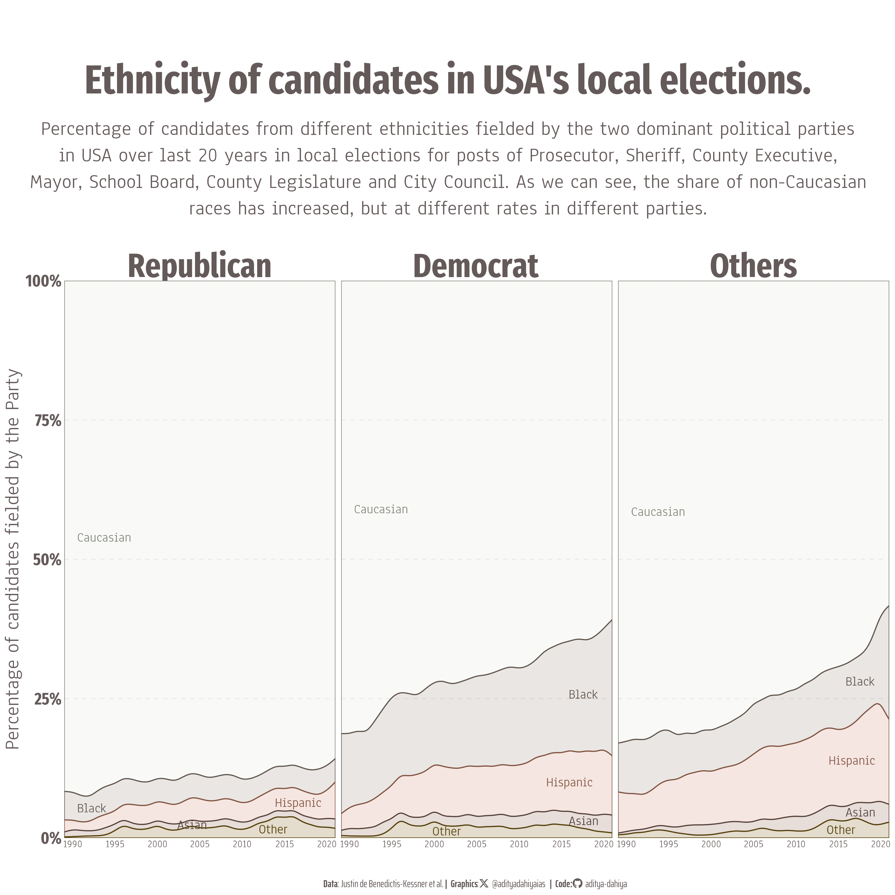

Examples of Visualizations created from the Data Is Plural Newsletter by Jeremy Singer-Vine
Data Is Plural
Data Visualization
Author
Aditya Dahiya
Published
April 1, 2024
Welcome to this webpage showcasing visualizations created using ggplot2, tidyverse, and R programming language, utilizing publicly available datasets from the weekly newsletter Data Is Plural by Jeremy Singer-Vine. Here, you’ll find open-source code detailing every step, from data acquisition to final rendering, with collapsible sections and annotations tailored to assist those new to ggplot2 and tidyverse. Feel free to explore the visualizations and delve into the code.
Your feedback is greatly appreciated and can be shared at my Twitter, where these visualizations are periodically posted. Alternatively, you can click on the link provided for “Edit this page” or submit suggestions or pull requests on Github.
D.I.P 2016.09.28: County-level and precinct-level results.
Figure 1 shows data collected by OpenElections, supported by the Knight Foundation - a comprehensive and standardized election dataset for the United States on County-level elections results from 1990-2020.
Code
# Library Load-in-----------------------------------------------------------library(tidyverse) # Load the tidyverse package for data wrangling and plottinglibrary(here) # Load the here package for managing file locationslibrary(showtext) # Load showtext for easier font usage in R graphslibrary(fontawesome) # Load fontawesome for social media iconslibrary(ggtext) # Load ggtext for Markdown text in ggplot2library(ggstream) # Load ggstream to use geom_stream()library(colorspace) # Load colorspace to manipulate colorslibrary(summarytools) # Load summarytools to view summary information# Data Load-in-------------------------------------------------------------# Load the dataset either from a local file or a URL# uselections <- read_csv(here("data", "ledb_candidatelevel.csv"))url <-"https://osf.io/download/tbwzd/"uselections <-read_csv(url)# Exploratory Data Analysis--------------------------------------------------uselections # Display the contents of the 'uselections' datasetdfSummary(uselections) |># Pipe the summary of 'uselections' dataset into 'view()' function for viewing in a nicer formatview()# Data Wrangling------------------------------------------------------------# Perform data wrangling operations on the 'uselections' datasetracedf <- uselections |>mutate(party =case_when( prob_democrat >0.5~"Democrat", prob_republican >0.5~"Republican",.default ="Others" )) |>mutate(race_est =case_when(is.na(race_est) ~"other",.default = race_est ) ) |>group_by(year, party, race_est) |>count() |>mutate(race_est =str_to_title(race_est)) |>ungroup() |>group_by(year) |>mutate(prop = n /sum(n)) |>mutate(party =fct( party, levels =c("Republican", "Democrat", "Others") ),race_est =fct( race_est,levels =c("Caucasian", "Black", "Hispanic", "Asian", "Other") ) )# Options & Visualization Parameters----------------------------------# Load fonts for the plotfont_add_google("Fira Sans Extra Condensed", family ="title_font") # Add Fira Sans Extra Condensed font for titlesfont_add_google("Saira Extra Condensed", family ="caption_font") # Add Saira Extra Condensed font for captionsfont_add_google("Anaheim", family ="body_font") # Add Anaheim font for plot textshowtext_auto() # Automatically enable showtext functionality# Define icons for use in the graph# Define colorsbg_col <-"white"# Define the background colortext_col <-"#655A5AFF"# Define the color for the texttext_hil <-"#655A5AFF"# Define the color for highlighted text# Define colors for stream graphfill_cols <- paletteer::paletteer_d("fishualize::Anchoviella_lepidentostole",direction =-1) |> colorspace::lighten(0.2)col_cols <- paletteer::paletteer_d("fishualize::Anchoviella_lepidentostole",direction =-1) |> colorspace::darken(0.4)# Define text sizets =unit(20, units ="cm") # Define the text size# Define caption text and social media iconssysfonts::font_add(family ="Font Awesome 6 Brands",regular = here::here("docs", "Font Awesome 6 Brands-Regular-400.otf"))github <-""github_username <-"aditya-dahiya"xtwitter <-""xtwitter_username <-"@adityadahiyaias"social_caption_2 <- glue::glue("<span style='font-family:\"Font Awesome 6 Brands\";'>{github};</span> <span style='color: {text_col}'>{github_username} </span>")social_caption_1 <- glue::glue("<span style='font-family:\"Font Awesome 6 Brands\";'>{xtwitter};</span> <span style='color: {text_col}'>{xtwitter_username}</span>")# Define plot title, subtitle, and captionplot_title <-"Ethnicity of candidates in USA's local elections."subtitle_text <-"Percentage of candidates from different ethnicities fielded by the two dominant political parties in USA over last 20 years in local elections for posts of Prosecutor, Sheriff, County Executive, Mayor, School Board, County Legislature and City Council. As we can see, the share of non-Caucasian races has increased, but at different rates in different parties."plot_subtitle <-paste(strwrap(subtitle_text, 100), collapse ="\n")plot_caption <-paste0("**Data**: Justin de Benedictis-Kessner et al. **|** ", "**Graphics**:", social_caption_1, " **|** ","**Code:**", social_caption_2)# Data Visualization----------------------------------------------------------# Create the main plot 'g' using ggplot with aesthetics definedg <- racedf |>ggplot(mapping =aes(x = year,y = prop,fill = race_est,label = race_est,color = race_est )) +# Add the stream geom to represent the datageom_stream(type ="proportional",alpha =0.3) +# Add labels to the stream geomgeom_stream_label(type ="proportional",hjust ="inward",size =0.7* ts,family ="body_font" ) +# Add facets to split the data by 'party'facet_wrap(~ party, nrow =1) +# Adjust the x-axis scalescale_x_continuous(expand =expansion(0),breaks =seq(1990, 2020, 5) ) +# Adjust the y-axis scalescale_y_continuous(expand =expansion(0),labels = scales::label_percent() ) +# Manually set color values for aestheticsscale_color_manual(values = col_cols) +# Manually set fill values for aestheticsscale_fill_manual(values = fill_cols) +# Add plot titles, subtitle, and captionlabs(title = plot_title,subtitle = plot_subtitle,caption = plot_caption,x =NULL,y ="Percentage of candidates fielded by the Party" ) +# Apply minimal theme to the plottheme_minimal() +# Customize theme elementstheme(legend.position ="none",panel.grid.major.y =element_line(linetype =2 ),panel.grid.minor.y =element_blank(),panel.grid.major.x =element_blank(),panel.grid.minor.x =element_blank(),plot.caption =element_textbox(family ="caption_font",hjust =0.5,colour = text_col,size =1.5* ts,margin =margin(1,0,0,0,unit ="cm")),plot.title =element_text(hjust =0.5,size =6* ts,family ="title_font",face ="bold",colour = text_hil,margin =margin(2,0,0.5,0,unit ="cm")),plot.subtitle =element_text(hjust =0.5,size =3* ts,family ="body_font",colour = text_col,margin =margin(5,0,2,0),lineheight =0.35),plot.background =element_rect(fill = bg_col,color = bg_col,linewidth =0),axis.text.y =element_text(size =2.5* ts,family ="title_font",colour = text_col,face ="bold",margin =margin(0,0,0,0)),axis.text.x =element_text(size =1.5* ts,family ="body_font",colour = text_col,face ="bold",margin =margin(0,0,0,0)),axis.title =element_text(size =3* ts,family ="body_font",colour = text_col,face ="bold",margin =margin(0,0,0,0)),strip.text =element_text(hjust =0.5,family ="title_font",face ="bold",colour = text_col,size =5* ts,margin =margin(1,0,0,0,unit ="cm")),plot.title.position ="plot")# Image Saving----------------------------------------------------------------# Save the plot as an image fileggsave(filename = here::here("docs", "dip_uselections.png"),plot = g,width =30, height =30, units ="cm",bg = bg_col)

Figure 1: Share of different ethnicities amongst the candidates fielded by the major USA political parties in local elections.
D.I.P. 2024.01.31: Military surplus
Visualizing the CRS Report for Congress: Excess Defense Articles: Grants and Sales to Allies and Friendly Countries in Figure 2
Figure 2: This world map visualizes the distribution of U.S. Excess Defense Articles (EDA) sales at reduced prices to allied and friendly nations. Highlighting top recipients like Israel, Morocco, and the UAE, the graph illustrates the strategic allocation of military equipment to support modernization efforts, peacekeeping missions, and counter-narcotics operations worldwide.
D.I.P. 2024.02.21: Self-driving stats.
A graphical analysis of Autonomous Vehicles’ (AV) Testing Data (released by the State of California’s Department of Motor Vehicles) in Figure 3 reveals the performance of various AV Manufacturers.
Code
# =============================================================================## About the Dataset-------------------------------------------------------------# =============================================================================## Credit: State of California, Department of Motor Vehicles# https://www.dmv.ca.gov/portal/# https://twitter.com/ca_dmv# @CA_DMV# To test or deploy self-driving cars on California's public roads, companies # must obtain a permit from the state DMV's Autonomous Vehicles Program. As part # of the permit requirements, these companies are obliged to submit yearly # reports detailing the frequency of instances where their vehicles exited # autonomous mode during tests. This includes cases resulting from technology # failures or situations demanding manual intervention by the test driver/# operator for safety reasons. These disengagement reports include information # such as the company name, permit number, VIN, monthly mileage, and annual# disengagements for each vehicle, even if there were none. # # Additionally, for each disengagement, the reports provide details such as the # vehicle involved, date of occurrence, initiator of the disengagement (whether # it was the vehicle itself, the test driver, remote operator, or passenger),# type of location, and a brief summary of the event.# Source: https://www.dmv.ca.gov/portal/vehicle-industry-services/autonomous-vehicles/disengagement-reports/# DISENGAGEMENT REPORTS# Autonomous vehicle makers participating in the Autonomous Vehicle Tester (AVT) # Program and AVT Driverless Program must annually submit reports detailing the # frequency of instances where their vehicles exited autonomous mode during # testing. This encompasses occurrences triggered by technological malfunctions # or scenarios necessitating manual intervention by the test driver/operator for # safe operation.# 2023 Disengagement Reports# 2023 Autonomous Vehicle Disengagement Reports (CSV)url1 <-"https://www.dmv.ca.gov/portal/file/2023-autonomous-vehicle-disengagement-reports-csv/"# 2023 Autonomous Mileage Reports (CSV)url2 <-"https://www.dmv.ca.gov/portal/file/2023-autonomous-mileage-reports-csv/"# 2022-23 Autonomous Vehicle Disengagement Reports (CSV)(first-time filers)# url3 <- "https://www.dmv.ca.gov/portal/file/2022-23-autonomous-vehicle-disengagement-reports-csvfirst-time-filers/"# 2022-23 Autonomous Mileage Reports (CSV)(first-time filers)# url4 <- "https://www.dmv.ca.gov/portal/file/2022-23-autonomous-mileage-reports-csvfirst-time-filers/"# 2023 Autonomous Vehicle Disengagement Reports (CSV)(driverless)# url5 <- "https://www.dmv.ca.gov/portal/file/2023-autonomous-vehicle-disengagement-reports-csvdriverless/"# 2023 Autonomous Mileage Reports (CSV)(driverless)# url6 <- "https://www.dmv.ca.gov/portal/file/2023-autonomous-mileage-reports-csvdriverless/"# =============================================================================## Library Load-in---------------------------------------------------------------# =============================================================================## Data Wrangling Toolslibrary(tidyverse)library(janitor)# Final plot (ggplot2) toolslibrary(scales)library(fontawesome)library(ggtext)library(showtext)library(patchwork)library(ggimage)library(ggfittext)library(colorspace)# ==============================================================================## Data Load-in------------------------------------------------------------------# ==============================================================================## {1} 2023 Autonomous Vehicle Disengagement Reports (CSV)df1 <-read_csv(url1) |>remove_empty()# {2} 2023 Autonomous Mileage Reports (CSV)df2 <-read_csv(url2) |>remove_empty()# ==============================================================================## Data Wrangling----------------------------------------------------------------# ==============================================================================## {1} 2023 Autonomous Vehicle Disengagement Reports (CSV)# Store full names of Variablescn_df1 <-names(df1)# short namesnames(df1) <-c("manufacturer","permit_number","date","vin","driver_need","driver","disengagement_initiate","disengagement_location","description")# Number of disengagements by AV vs. Test Driver for each manufacturerplot1df1 <- df1 |>mutate(disengagement_initiate =if_else(str_detect(disengagement_initiate, "AV"),"AV System","Test Driver")) |>group_by(manufacturer) |>count(disengagement_initiate) |># A minor nomenculature change to match data in all plotsmutate(manufacturer =if_else( manufacturer =="Nissan North America","Nissan", manufacturer ))# Top 14 descriptions of reasons for disengagementssum_desc <- df1 |>mutate(description =fct(description),description =fct_lump_n(description, n =13) ) |>count(description, sort =TRUE) |>pull(description)# Number of disengagements by reason for each manufacturerplot2df1 <- df1 |># A minor nomenculature change to match data in all plotsmutate(manufacturer =if_else( manufacturer =="Nissan North America","Nissan", manufacturer )) |>mutate(short_description =case_when( description == sum_desc[1] ~"Wrongly predicted road user behavior", description == sum_desc[2] ~"Other Reasons", description == sum_desc[3] ~"Hardware issues", description == sum_desc[4] ~"Software issues", description == sum_desc[5] ~"Vehicle too close to road boundary", description == sum_desc[6] ~"Onboard map errors", description == sum_desc[7] ~"Unexpected braking", description == sum_desc[8] ~"Undesirable lane placement", description == sum_desc[9] ~"Too close to preceding vehicle", description == sum_desc[10] ~"Lane violation", description == sum_desc[11] ~"Motion plan error", description == sum_desc[12] ~"Unwanted maneuver by vehicle", description == sum_desc[13] ~"Lane violation", description =="Prediction discrepancy. Adjacent vehicle made illegal maneuver from left turn only lane."~"Other vehicles' fault", description =="Prediction discrepancy. Late and illegal cut-in from other vehicle from adjacent lane."~"Illegal cut by others", description =="Prediction discrepancy. Late cut-in from other vehicle from adjacent lane."~"Late cut by others",str_detect(description, "Planning Logic") ~"Incorrect Planning Logic",str_detect(description, "Object Perception") ~"Incorrect Object Perception",str_detect(description, "The lead vehicle stopped for stop sign was falsely identified") ~"Incorrect Object Perception",str_detect(description, "While traveling on a narrow road, an incoming vehicle approached") ~"Other vehicles' fault",str_detect(description, "The AV system exited autonomous mode due to hardware irregularity.") ~"Hardware issues",str_detect(description, "Manual disengagement as the AV had hardware irregularity. The HMI") ~"Hardware issues",str_detect(description, "Manual disengagement after a scooter made contact with the AV.") ~"Other vehicles' fault",str_detect(description, "Disengage for a perception discrepancy for which a component of the vehicle's perception system") ~"Perception Error",str_detect(description, "Disengage for a software discrepancy for which our vehicle's diagnostics received") ~"Software issues",.default ="Other Reasons" ) ) |>group_by(manufacturer) |>count(short_description, sort =TRUE) |>rename(snag = n)# {2} 2023 Autonomous Mileage Reports (CSV)# Store full names of variablescn_df2 <-names(df2)# cleaner namesdf2 <- df2 |>clean_names()# Tibble of Brands, total mileage and disengagementsplotdf2 <- df2 |>select(-c(vin_number, annual_total,permit_number)) |>pivot_longer(cols =-c(manufacturer, annual_total_of_disengagements),names_to ="month",values_to ="miles" ) |>group_by(manufacturer) |>summarise(total_miles =sum(miles, na.rm =TRUE),total_disengagements =sum(annual_total_of_disengagements)) |>arrange(desc(total_miles)) |>mutate(diseng_p_100m =100* total_disengagements / total_miles ) |># Adding logos of manufacturers for the plotmutate(logo_url =c("https://upload.wikimedia.org/wikipedia/commons/thumb/9/9f/Waymo_logo.svg/1200px-Waymo_logo.svg.png","https://upload.wikimedia.org/wikipedia/commons/5/5d/Zoox_logo_2021.png","https://upload.wikimedia.org/wikipedia/commons/thumb/1/1a/Cruise_logo.svg/2560px-Cruise_logo.svg.png","https://1000logos.net/wp-content/uploads/2016/10/Apple-Logo.png","https://seekvectorlogo.com/wp-content/uploads/2023/03/nuro-inc-vector-logo.png","https://media.designrush.com/inspiration_images/136995/conversions/_1524250340_590_Mercedes-Benz-Logo-Wordmark-mobile.jpg","https://mms.businesswire.com/media/20231108625285/en/1938556/23/ghost_combination_black_new.jpg","https://d1.awsstatic.com/customer-references-case-studies-logos/Customer-References-600x400-logos/600X400_WeRide_logo.8637603e647959947cbd83eded476566dd45ef46.png","https://cdn.cookielaw.org/logos/8c60fe9e-585e-46b1-8f92-eba17239401e/d3e43cda-e0a4-42f2-9c04-0e1900c3f68f/808c47fb-8484-44eb-b369-d90d6bb4733e/motional_logo_stack_colorrev_rgb_black.png","https://www.apollo.auto/abolo/images/logo.png","https://mma.prnewswire.com/media/777482/ai_motive_landscape_logo_Logo.jpg","https://s3-us-west-2.amazonaws.com/cbi-image-service-prd/original/fc97e73f-33bd-414e-a9ef-e4504451e4c0.png","https://upload.wikimedia.org/wikipedia/commons/8/8c/Nissan_logo.png","https://global.toyota/pages/news/images/2023/04/11/0800/20230411_02_01.png","https://s28.q4cdn.com/896456191/files/images/didi-logo.png","https://logos-world.net/wp-content/uploads/2022/11/Qualcomm-Emblem.png","https://upload.wikimedia.org/wikipedia/commons/thumb/1/16/Bosch-logo.svg/2560px-Bosch-logo.svg.png","https://ces.vporoom.com/Imagry/image/imagry-logo-with-short-tagline.gif","https://d1io3yog0oux5.cloudfront.net/_e08a077351e2c1b3b2e6179a6ccad2db/aurora/logo.png","https://gatik.ai/wp-content/uploads/gatik-logo.png","https://upload.wikimedia.org/wikipedia/commons/thumb/2/2b/Valeo_Logo.svg/1200px-Valeo_Logo.svg.png" ))# Change levels of Manufacturer to have a common order in all plotsmanufacturer_levels <-c(plotdf2$manufacturer, "Valeo")plotdf2 <- plotdf2 |>mutate(manufacturer =fct(manufacturer, levels = manufacturer_levels)) |>mutate(manufacturer =fct_rev(manufacturer))plot1df1 <- plot1df1 |>mutate(manufacturer =fct(manufacturer, levels = manufacturer_levels)) |>mutate(manufacturer =fct_rev(manufacturer))plot2df1 <- plot2df1 |>mutate(manufacturer =fct(manufacturer, levels = manufacturer_levels)) |>mutate(manufacturer =fct_rev(manufacturer))# Top n manufacturers by number of miles driventop_manufacturers <- plotdf2 |>slice_max(order_by = total_miles, n =11) |>pull(manufacturer)# Common Manufacturerscommon_manufacturers <- plot1df1 |>inner_join(plot2df1, relationship ="many-to-many") |>inner_join(plotdf2) |>distinct(manufacturer) |>pull(manufacturer) |>as.character()# =============================================================================## Options & Visualization Parameters--------------------------------------------# =============================================================================## Load fontsfont_add_google("Fredericka the Great",family ="title_font") # Font for titlesfont_add_google("Saira Extra Condensed",family ="caption_font") # Font for the captionfont_add_google("Fira Sans Extra Condensed",family ="body_font") # Font for plot textshowtext_auto()# Define coloursbg_col <-"white"# Background Colourtext_col <-"#04225CFF"# Colour for the texttext_hil <-"#309D96FF"# Colour for higlighted text# Define Text Sizets <-unit(30, units ="cm") # Text Size# Caption stuffsysfonts::font_add(family ="Font Awesome 6 Brands",regular = here::here("docs", "Font Awesome 6 Brands-Regular-400.otf"))github <-""github_username <-"aditya-dahiya"xtwitter <-""xtwitter_username <-"@adityadahiyaias"social_caption_1 <- glue::glue("<span style='font-family:\"Font Awesome 6 Brands\";'>{github};</span> <span style='color: {text_hil}'>{github_username} </span>")social_caption_2 <- glue::glue("<span style='font-family:\"Font Awesome 6 Brands\";'>{xtwitter};</span> <span style='color: {text_hil}'>{xtwitter_username}</span>")# Add text to plot--------------------------------------------------------------plot_title <-"Behind the Wheel of Tomorrow:\nCalifornia's Autonomous Vehicles Testing Data"plot_caption <-paste0("**Data:** State of California, Department of Motor Vehicles", " | ", " **Code:** ", social_caption_1, " | ", " **Graphics:** ", social_caption_2)subtitle_text <-"An analysis of Autonomous Vehicles’ (AV) Testing Data (released by the State of California's Department of Motor Vehicles) reveals the performance of various AV Manufacturers. The number of total miles driven, disengagement rates (per 100 miles driven), and common reasons for autonomous mode exits (termed “disengagements”) indicate dominance & error-free tech of Google’s Waymo, and error-prone nature of Apple’s AV."plot_subtitle <-str_wrap(subtitle_text, width =115)# ==============================================================================## Data Visualization------------------------------------------------------------# ==============================================================================#tempdf2 <- plotdf2 |>filter(manufacturer %in% common_manufacturers) |>filter(manufacturer %in% top_manufacturers)g1 <- tempdf2 |>ggplot(mapping =aes(x = total_miles,y = manufacturer ) ) +geom_col(fill = text_col,color ="black",alpha =0.5 ) +geom_text(aes(label =comma(total_miles),colour = (total_miles >1e6) ),family ="body_font",size =1.8* ts,hjust =if_else(tempdf2$total_miles >1e6,1.1, -0.1) ) +geom_image(aes(x =-1.7e6,image = logo_url ),by ="height",hjust =1 ) +scale_colour_manual(values =c(text_col, "white")) +scale_x_continuous(expand =expansion(c(0.45, 0.2)),breaks =c(1e5, 1e6, 2e6, 3e6),labels =label_number(scale_cut =cut_short_scale() ) ) +labs(subtitle ="Total AV miles driven by Manufacturer's\nAutonomous Vehicles (2023))",y =NULL, x =NULL ) +theme_minimal() +theme(axis.text.y =element_blank(),axis.ticks.y =element_blank(),panel.grid =element_blank(),panel.grid.major.x =element_line(linetype =2,colour = text_hil,linewidth =1 ),axis.text.x =element_text(hjust =0.5,size =4* ts,family ="body_font",colour = text_col,margin =margin(0, 0, 0, 0,unit ="cm"),lineheight =0.35 ),plot.subtitle =element_text(hjust =0.5,size =4* ts,family ="body_font",colour = text_col,margin =margin(2, 0, 0, 0,unit ="cm" ),lineheight =0.25 ),legend.position ="none" )g2 <- tempdf2 |>ggplot(mapping =aes(x = diseng_p_100m,y = manufacturer ) ) +geom_col(fill = text_hil,colour ="black",alpha =0.5 ) +geom_text(aes(label =round(diseng_p_100m, 2),colour = (diseng_p_100m >35) ),family ="body_font",size =1.8* ts,hjust =if_else(tempdf2$diseng_p_100m >35,1.1, -0.1) ) +scale_colour_manual(values =c(text_hil, "white")) +scale_x_continuous(expand =expansion(c(0, 0.2)),breaks =c(0, 25, 50),labels =c(0, 25, 50) ) +labs(subtitle ="Errors \n(per 100 miles)",y =NULL, x =NULL ) +theme_minimal() +theme(axis.text.y =element_blank(),axis.ticks.y =element_blank(),panel.grid =element_blank(),panel.grid.major.x =element_line(linetype =2,colour = text_hil,linewidth =1 ),axis.text.x =element_text(hjust =0.5,size =4* ts,family ="body_font",colour = text_col,margin =margin(0, 0, 0, 0,unit ="cm"),lineheight =0.35 ),plot.subtitle =element_text(hjust =0.5,size =4* ts,family ="body_font",colour = text_col,margin =margin(2, 0, 0, 0,unit ="cm" ),lineheight =0.25 ),legend.position ="none" )# Colours for third plotg3col <-c("#43B48DFF", "#F5773AFF")g3 <- plot1df1 |>left_join(plotdf2) |>mutate(n = n / total_miles) |>filter(manufacturer %in% common_manufacturers) |>filter(manufacturer %in% top_manufacturers) |>ggplot(mapping =aes(y = manufacturer,x = n,fill = disengagement_initiate,label = disengagement_initiate,colour = disengagement_initiate ) ) +geom_col(position ="fill",col ="white" ) +geom_bar_text(position ="fill",hjust =0.5,vjust =0.5,reflow =TRUE,place ="center",min.size =1,grow =TRUE,padding.y =unit(25, "mm"),lineheight =0.25 ) +scale_x_continuous(breaks =c(0, 1),labels =label_percent() ) +scale_fill_manual(values = g3col |>lighten(0.7)) +scale_colour_manual(values = g3col |>darken(0.5)) +labs(subtitle ="Who stopped\nthe AV?",x =NULL, y =NULL ) +theme_minimal() +theme(legend.position ="none",panel.grid =element_blank(),axis.text.y =element_blank(),axis.text.x =element_blank(),plot.subtitle =element_text(hjust =0.5,size =4* ts,family ="body_font",colour = text_col,margin =margin(2, 0, 0, 0,unit ="cm" ),lineheight =0.25 ) )g4 <- plot2df1 |>left_join(plotdf2) |>mutate(snag_p_100m = snag / total_miles) |>mutate(snag_fill = snag_p_100m /sum(snag_p_100m)) |>filter(manufacturer %in% common_manufacturers) |>filter(manufacturer %in% top_manufacturers) |>ggplot(mapping =aes(y = manufacturer,x = snag_p_100m,fill = short_description,label = short_description,color = short_description ) ) +geom_col(position ="fill",colour ="darkgrey" ) +geom_bar_text(position ="fill",hjust =0.5,vjust =0.5,reflow =TRUE,place ="center",min.size =1,lineheight =0.25,grow =TRUE,padding.x =unit(15, "mm"),padding.y =unit(15, "mm") ) + paletteer::scale_fill_paletteer_d("palettesForR::Lights", direction =-1) +scale_color_manual(values = paletteer::paletteer_d("palettesForR::Lights",direction =-1) |>darken(0.4) ) +scale_x_continuous(breaks =c(0, 0.5, 1),labels =label_percent() ) +labs(subtitle ="Reasons for AV\ndisengagement",x =NULL, y =NULL ) +theme_void() +theme(legend.position ="none",panel.grid =element_blank(),axis.text.y =element_blank(),axis.text.x =element_text(colour = text_col,hjust =0,family ="body_font",size =4* ts,margin =margin(0,0,0,0) ),plot.subtitle =element_text(hjust =0.5,size =4* ts,family ="body_font",colour = text_col,margin =margin(2, 0, 0, 0,unit ="cm" ),lineheight =0.25 ) )# Composing the plotsplot_design ="AAABCDDD"g <- g1 + g2 + g3 + g4 +plot_layout(design = plot_design)g_final <- g +plot_annotation(title = plot_title,subtitle = plot_subtitle,caption = plot_caption,theme =theme(plot.subtitle =element_text(hjust =0.5,size =4.8* ts,family ="body_font",colour = text_col,margin =margin(2, 0, 0, 0,unit ="cm" ),lineheight =0.3 ) ) ) &theme(plot.caption =element_textbox(family ="caption_font",hjust =0.5,colour = text_hil,size =4* ts,margin =margin(1, 0, 2, 0,unit ="cm" ) ),plot.title =element_text(hjust =0.5,size =10* ts,family ="title_font",face ="bold",colour = text_hil,margin =margin(2, 0, 0, 0,unit ="cm" ),lineheight =0.35 ),plot.background =element_rect(fill ="transparent",color ="transparent",linewidth =0 ),plot.margin =margin(0, 0, 0, 0),legend.background =element_rect(fill ="transparent",color ="transparent" ),panel.background =element_rect(fill ="transparent",colour ="transparent" ) )# =============================================================================## Image Saving-----------------------------------------------------------------# =============================================================================#ggsave(filename = here::here("docs", "dip_self_driving_cars.png"),plot = g_final,width =75,height =90,units ="cm",bg = bg_col)
Figure 3: A graphical analysis of Autonomous Vehicles’ (AV) Testing Data (released by the State of California’s Department of Motor Vehicles) reveals the performance of various AV Manufacturers. The number of total miles driven, disengagement rates (per 100 miles driven), and common reasons for autonomous mode exits (termed “disengagements”) indicate dominance & error-free tech of Google’s Waymo, and error-prone nature of Apple’s AV.
# =============================================================================## About the Dataset-------------------------------------------------------------# =============================================================================## Credit: Climate Policy Initiative# Global Landscape of Climate Finance 2023# Barbara Buchner, Baysa Naran, Rajashree Padmanabhi, Sean Stout, Costanza # Strinati, Dharshan Wignarajah, Gaoyi Miao, Jake Connolly and Nikita Marini# November 2, 2023# https://www.climatepolicyinitiative.org/publication/global-landscape-of-climate-finance-2023/# Climate Policy Initiative collected data to produce its "Global Landscape of # Climate Finance 2023" report, examining various forms of primary financing # aimed at reducing greenhouse gas emissions and enhancing climate resilience in # real economy sectors. Released in November, the report disclosed approximately # $1.3 trillion in such financing worldwide during 2021–2022. Accompanying the # report is a spreadsheet detailing estimates by year, region, sector, focus on # mitigation versus adaptation, financial instrument type, funder sector (public # versus private), and funder type (development bank, corporation, institutional # investors, etc.). Previous reports offer downloadable data covering 2019–2020 # and 2017–2018, with earlier coverage on national climate funds # (DIP 2022.02.09) and climate finance projects (DIP 2023.06.14).# =============================================================================## Findings ---------------------------------------------------------------------# =============================================================================## Where the money comes from:# The share of public and private sources in the funding for climate change # mitigation activities has stayed almost the same. Both have increased # together, in same proportion. Within the various sources of funding, # largest increases in funding have come from “Public Funds” and “State-Owned # Enterprises”. Amongst private sources of funds, Commercial Institutions and # Individual Households provide bulk of the funding.# Where the money goes:# The East Asia and Pacific region continue to get an ever-increasing share of # total funds dedicated to Climate Change. However, importantly, the Western # Europe region has increased its allotment by the maximum, a staggering 152%.# Global-Landscape-of-Climate-Finance-2023# GLCF 2023 – Data Downloadurl1 <-"https://www.climatepolicyinitiative.org/wp-content/uploads/2023/11/GLCF-2023-Data-Download.xlsx"# =============================================================================## Library Load-in---------------------------------------------------------------# =============================================================================## Data Wrangling Toolslibrary(tidyverse)library(openxlsx)library(janitor)# Final plot (ggplot2) toolslibrary(scales)library(fontawesome)library(ggtext)library(showtext)library(treemapify)library(colorspace)library(gganimate)# =============================================================================## Data Load-in & Data Wrangling-------------------------------------------------# =============================================================================## Breakdown of global climate finance by public and private actors (USD billion)finance <-read.xlsx( url1,sheet =3,colNames =TRUE,rowNames =FALSE,rows =c(4, 6:11, 13:21),cols =1:7 ) |>remove_empty() |>mutate(funding_type =c(rep("Private", 6),rep("Public", 9) ) ) |>rename(actors = Actors) |>as_tibble() |>pivot_longer(cols =2:7,names_to ="year",values_to ="value" )# Breakdown of global climate finance by Use and Sector (USD billion)usage <-read.xlsx( url1,sheet =3,colNames =TRUE,rowNames =FALSE,rows =c(56, 58:66, 68:77, 79:88, 90:91),cols =1:5 ) |>remove_empty() |>mutate(usage_type =c(rep("Adaptation", 9),rep("Mitigation", 10),rep("Dual Benefits", 10),rep("Unknown", 2) ) ) |>rename(sector =`Use/Sector`) |>as_tibble() |>pivot_longer(cols =2:5,names_to ="year",values_to ="value" )# Breakdown of global climate finance by region of destination (USD billion)regions <-read.xlsx( url1,sheet =3,colNames =TRUE,rowNames =FALSE,rows =167:177,cols =1:7) |>remove_empty() |>rename(region =`Region`) |>as_tibble() |>pivot_longer(cols =2:7,names_to ="year",values_to ="value" ) # Create a common tibble to join all data to use a faceted treemapdf <-bind_rows( regions |>rename(fill_var = region) |>mutate(group_var =" ",table_type ="Destination for funds" ), finance |>rename(fill_var = actors,group_var = funding_type ) |>mutate(table_type ="Source of funds") ) |>mutate(year =as.numeric(year))# Get levels of categories fixed for nicer colours later onfill_var_levels <- df |>group_by(table_type, group_var, fill_var) |>summarise(total_val =sum(value)) |>arrange(desc(total_val)) |>pull(fill_var)plotdf <- df |>mutate(fill_var =fct(fill_var, levels = fill_var_levels)) |>mutate(table_type =fct(table_type,levels =c("Source of funds","Destination for funds" ))) |>ungroup()# Some EDA Plots to write the messages in actual plotplotdf |>filter(table_type =="Usage of funds") |>ggplot(aes(x = year, y = value, col = fill_var)) +geom_line(linewidth =2) +scale_color_brewer(palette ="Dark2")plotdf |>filter(table_type =="Usage of funds") |>group_by(fill_var) |>summarise(increase = (100* (max(value) -min(value)))/min(value))plotdf |>filter(table_type !="Usage of funds") |>group_by(group_var, year) |>summarise(value =sum(value, na.rm =TRUE)) |>ggplot(aes(x = year, y = value, col = group_var)) +geom_line(linewidth =2)plotdf |>filter(table_type !="Usage of funds") |>group_by(group_var, fill_var, year) |>summarise(value =sum(value, na.rm =TRUE)) |>ggplot(aes(x = year, y = value, col = fill_var,linetype = group_var)) +geom_line(linewidth =2) +scale_color_brewer(palette ="Dark2")plotdf |>filter(table_type !="Usage of funds") |>group_by(group_var, fill_var) |>summarise(increase = (100* (max(value) -min(value)))/min(value)) |>group_by(group_var) |>arrange(desc(increase))# =============================================================================## Options & Visualization Parameters--------------------------------------------# =============================================================================## Load fonts# Font for titlesfont_add_google("Fjalla One",family ="title_font") # Font for the captionfont_add_google("Saira Extra Condensed",family ="caption_font") # Font for plot textfont_add_google("Anton",family ="body_font") showtext_auto()# Define coloursbg_col <-"white"# Background Colourtext_col <-"#009270FF"|>darken(0.5) # Colour for the texttext_hil <-"#009270FF"# Colour for higlighted text# Add text to plot--------------------------------------------------------------plot_title <-"Flow of Global Climate Funds"plot_caption <-paste0("Data: Climate Policy Initiative | Code & Graphics: GitHub @aditya-dahiya")subtitle_text <-"Exploring the sources of “Climate Funds” – funds for combating climate change, its mitigation, reversal; and, the regions where these go to. From 2017 to 2022, share of public and private sources in the funding has stayed constant. Within the various sources of funding, largest increases in funding have come from “Public Funds” and “State-Owned Enterprises”. Further, the East Asia and Pacific region continue to get an ever-increasing share of total funds dedicated to Climate Change. However, importantly, the Western Europe region has increased its allotment by the maximum, a staggering 152%, from 2017 to 2022."plot_subtitle <-str_wrap(subtitle_text, width =100)# ==============================================================================## Data Visualization------------------------------------------------------------# ==============================================================================#g <-ggplot(plotdf, aes(label = fill_var,area = value,subgroup = group_var,fill = fill_var )) +geom_treemap(layout ="fixed" ) +geom_treemap_subgroup_border(layout ="fixed",colour ="white",alpha =0.5 ) +geom_treemap_subgroup_text(layout ="fixed", place ="centre",colour ="white",family ="body_font" ) +geom_treemap_text(layout ="fixed", place ="center", grow =FALSE, colour = text_col,family ="caption_font",reflow =TRUE ) +facet_wrap(~ table_type) +scale_fill_manual(values = paletteer::paletteer_d("khroma::stratigraphy")[(115):(115+25)] ) +labs(title =paste0(plot_title, ": {frame_time}"),subtitle = plot_subtitle,caption = plot_caption ) +theme_minimal() +theme(legend.position ="none",strip.text.x =element_text(colour = text_col,family ="body_font",size =18,margin =margin(5, 0, 5, 0) ),plot.title =element_text(hjust =0.5,family ="title_font",size =32,colour = text_hil, margin =margin(15, 0, 5, 0) ),plot.subtitle =element_text(hjust =0.5,family ="caption_font",size =14,colour = text_col,lineheight =1.1,margin =margin(5, 0, 5, 0) ),plot.caption =element_text(hjust =0.5,colour = text_hil,size =9,family ="caption_font",margin =margin(5, 0, 10, 0) ) ) +transition_time(as.integer(year)) +ease_aes('linear')# =============================================================================## Image Saving-----------------------------------------------------------------# =============================================================================#anim_save(filename = here::here("docs", "dip_climate_funding.gif"),animation = g,fps =10,duration =20,start_pause =5,end_pause =10,height =650,width =600,units ="px")ggview::ggview(device ="png",plot = g,width =23,height =30,units ="cm",bg = bg_col)
Figure 4: From 2017 to 2022, share of public and private sources in the funding has stayed constant. Within the various sources of funding, largest increases in funding have come from “Public Funds” and “State-Owned Enterprises”. Further, the East Asia and Pacific region continue to get an ever-increasing share of total funds dedicated to Climate Change. However, importantly, the Western Europe region has increased its allotment by the maximum, a staggering 152%, from 2017 to 2022.
# =============================================================================## About the Dataset-------------------------------------------------------------# =============================================================================## Data URL: https://github.com/sfchronicle/police_pursuits# Source: Fatality Analysis Reporting System (FARS)# https://www.nhtsa.gov/research-data/fatality-analysis-reporting-system-fars# Deadly police chases. Journalists at the San Francisco Chronicle have assembled # a comprehensive record of over 3,300 deaths resulting from police car pursuits# between 2017 and 2022 on a national scale. This compilation draws from various # sources including the federal government's Fatality Analysis Reporting System # (DIP 2016.08.31), studies conducted by research institutions, media coverage, # legal actions, and public information requests. Each entry in the dataset # provides details such as the individual's name, age, gender, race, and their # involvement in the pursuit (whether as a driver, passenger, bystander, or # officer). Additionally, it includes information about the date, location, # stated reason for the pursuit, and the primary law enforcement agency # responsible for the incident.# Credits: Reporters at the San Francisco Chronicle# The San Francisco Chronicle# https://www.sfchronicle.com/projects/2024/police-chases/# =============================================================================## Findings ---------------------------------------------------------------------# =============================================================================## =============================================================================## Library Load-in---------------------------------------------------------------# =============================================================================## Data Wrangling Toolslibrary(tidyverse)library(openxlsx)library(janitor)# Final plot (ggplot2) toolslibrary(scales)library(fontawesome)library(ggtext)library(showtext)library(colorspace)library(usmap)library(usmapdata)library(patchwork)# =============================================================================## Data Load-in, EDA & Data Wrangling--------------------------------------------# =============================================================================#police <-read_csv("https://raw.githubusercontent.com/sfchronicle/police_pursuits/master/data/sfc_pursuit_fatalities.csv")# summarytools::dfSummary(police) |> summarytools::view()plotdf <- police |>select(-c(unique_id, data_source, race_source)) |>mutate(date =mdy(date),race =case_when(str_detect(race, "black") ~"Black", # Disclaimer: a little bias introduced by data cleaning as data-rows with any one entry as black will be treated as "Black"str_detect(race, "white") ~"White", # Dislcaimer: Similar data biasstr_detect(race, "latino") ~"Latino",.default ="Others" ),race =fct(race, levels =c("Black", "White", "Latino", "Others")),person_role =case_when( person_role %in%c("driver", "passenger") ~"Driver/Passenger", person_role =="bystander"~"Bystander", person_role =="officer"~"Police Officer",.default ="Others" ),person_role =fct( person_role,levels =c("Driver/Passenger", "Bystander", "Police Officer", "Others") ) ) |>rename(lon ="long") |>filter(lat >0& lat <90) |>filter(lon >-150& lon <0) |>usmap_transform() |>as_tibble() |>extract(col = geometry, into =c('x', 'y'), regex ="\\((.*), (.*)\\)", convert =TRUE) plotdf2 <-bind_rows( plotdf |>count(race) |>rename(var = race) |>mutate(type ="Race of Person(s) killed"), plotdf |>count(person_role) |>rename(var = person_role) |>mutate(type ="Role of Person(s) killed"))# =============================================================================## Options & Visualization Parameters--------------------------------------------# =============================================================================## Load fonts# Font for titlesfont_add_google("Faster One",family ="title_font") # Font for the captionfont_add_google("Saira Extra Condensed",family ="caption_font") # Font for plot textfont_add_google("Iceberg",family ="body_font") showtext_auto()# Define coloursbg_col <-"white"# Background Colourtext_col <-"#012169FF"# Colour for the texttext_hil <-"#C8102EFF"# Colour for highlighted text# Define Text Sizets <-unit(20, units ="cm") # Text Size# Caption stuffsysfonts::font_add(family ="Font Awesome 6 Brands",regular = here::here("docs", "Font Awesome 6 Brands-Regular-400.otf"))github <-""github_username <-"aditya-dahiya"xtwitter <-""xtwitter_username <-"@adityadahiyaias"social_caption_1 <- glue::glue("<span style='font-family:\"Font Awesome 6 Brands\";'>{github};</span> <span style='color: {text_hil}'>{github_username} </span>")social_caption_2 <- glue::glue("<span style='font-family:\"Font Awesome 6 Brands\";'>{xtwitter};</span> <span style='color: {text_hil}'>{xtwitter_username}</span>")# Add text to plot--------------------------------------------------------------plot_title <-"Deadly police chases"plot_caption <-paste0("**Data:** The San Francisco Chronicle", " | ", " **Code:** ", social_caption_1, " | ", " **Graphics:** ", social_caption_2)subtitle_text <-"Geographical distribution, race, age and role of persons killed in Police Chases in the United States (2017 - 2022)"plot_subtitle <-str_wrap(subtitle_text, width =70)# ==============================================================================## Data Visualization------------------------------------------------------------# ==============================================================================#g1 <-plot_usmap("states",col ="darkgrey",fill ="white",linewidth =0.4 ) +geom_point(data = plotdf,mapping =aes(x = x,y = y,colour = person_role,size = number_killed),alpha =0.5 ) +scale_color_manual(values =c("#FFC72CFF", "#1D4289FF", "#862633FF", "lightgrey") ) +guides(colour =guide_legend(override.aes =list(size =8) ) ) +labs(title = plot_title,subtitle = plot_subtitle,caption = plot_caption,colour ="Role of person(s) killed",size ="Number of persons killed" ) + ggthemes::theme_map(base_family ="body_font" ) +theme(plot.title =element_text(hjust =0.5,family ="title_font",size =12.5* ts,colour = text_hil, margin =margin(15, 0, 0, 0, unit ="mm") ),plot.subtitle =element_text(hjust =0.5,family ="body_font",size =6* ts,colour = text_col,lineheight =0.3,margin =margin(0, 0, 0, 0, unit ="mm") ),plot.caption =element_textbox(hjust =0.5,colour = text_hil,size =3* ts,family ="caption_font",margin =margin(11, 0, 0, 0, unit ="cm") ),legend.position.inside =c(0.4, 0.),legend.direction ="horizontal",legend.spacing =unit(0, "cm"),legend.title =element_text(hjust =1,family ="caption_font",size =3.5* ts,colour = text_col,lineheight =0.35,margin =margin(0, 5, 0, 0, unit ="mm") ),legend.text =element_text(hjust =1,family ="caption_font",size =3.5* ts,colour = text_col,lineheight =0.35,margin =margin(0, 5, 0, 0, unit ="mm") ) )g2 <- plotdf2 |>ggplot(aes(y =reorder(var, n), x = n, fill = type)) +geom_col(colour ="black",fill ="lightgrey" ) +facet_wrap(~ type, scales ="free") +scale_x_continuous(expand =expansion(0)) +scale_y_discrete(expand =expansion(0)) +theme_minimal(base_family ="body_font" ) +labs(x =NULL, y =NULL) +theme(panel.grid =element_blank(),panel.grid.major.x =element_line(linetype =2,colour ="lightgrey" ),legend.position ="none",strip.text =element_text(hjust =0,family ="body_font",size =3.5* ts,colour = text_col,lineheight =0.35,margin =margin(0, 0, 5, 0, unit ="mm") ),axis.text.x =element_text(hjust =0.5,vjust =0.5,family ="body_font",size =3.5* ts,colour = text_col,lineheight =0.35,margin =margin(0, 0, 0, 0, unit ="mm") ),axis.text.y =element_text(hjust =1,vjust =0.5,family ="caption_font",size =4* ts,colour = text_col,lineheight =0.35,margin =margin(0, 0, 0, 0, unit ="mm") ),plot.title.position ="plot" )g3 <-ggplot(plotdf, aes(age)) +geom_histogram(fill ="lightgrey",colour ="black",binwidth =5 ) +scale_y_continuous(expand =expansion(0),breaks =c(100, 300, 500) ) +scale_x_continuous(expand =expansion(0) ) +coord_flip() +theme_minimal() +labs(x =NULL, y =NULL,subtitle ="Age Distribution of Victims" ) +theme(panel.grid =element_blank(),panel.grid.major.x =element_line(linetype =2,colour ="lightgrey" ),legend.position ="none",axis.text =element_text(hjust =0.5,family ="body_font",size =3.5* ts,colour = text_col,lineheight =0.35,margin =margin(0, 5, 0, 0, unit ="mm") ),plot.subtitle =element_text(hjust =0.5,family ="body_font",size =3.5* ts,colour = text_col,lineheight =0.35,margin =margin(2, 0, 0, 0, unit ="mm") ) )g <- g1 + patchwork::inset_element( g2,left =0,bottom =0.02,right =0.67,top =0.25,align_to ="full",clip =FALSE,on_top =TRUE ) + patchwork::inset_element( g3,left =0.67,bottom =0.02,right =1,top =0.25,align_to ="full",clip =FALSE,on_top =TRUE ) # =============================================================================## Image Saving-----------------------------------------------------------------# =============================================================================#ggsave(filename = here::here("docs", "dip_fatal_police_pursuits.png"),plot = g,width =40,height =45,units ="cm",bg = bg_col)
Figure 5: Geographical distribution, race, age and role of persons killed in Police Chases in the United States (2017 - 2022)
Another map in Figure 6 shows the distribution of fatal police chases in California overlaid on major highways drawn from Open Street Maps ( et al. 2017).
Code
# Load additional librarieslibrary(osmdata) # wrapper for Overpass API from Open Street Mapslibrary(sf) # library for manipulating Simple features objects# Get California sf geomtetry mapcal_map <- usmapdata::us_map(include ="CA",regions =c("counties"))# Get California Highway Data: Open Street Mapscal <-opq("California")# Get California Motorwayscal_roads <- cal |>add_osm_feature(key ="highway",value ="motorway") |>osmdata_sf()main_roads <- cal_roads$osm_lines |>st_transform(crs =st_crs(cal_map)) |>st_intersection(cal_map)# Get California Trunk Roadscal_trunk_roads <- cal |>add_osm_feature(key ="highway",value ="trunk") |>osmdata_sf()trunk_roads <- cal_trunk_roads$osm_lines |>st_transform(crs =st_crs(cal_map)) |>st_intersection(cal_map)# Getting Fatal Police Chase Crashes data for Californiacal_crashes <- police |>filter(state =="CA") |>filter(centroid_geo ==0) |>usmap_transform(input_names =c("long", "lat") ) |>as_tibble() |>extract(col = geometry, into =c('x', 'y'), regex ="\\((.*), (.*)\\)", convert =TRUE) |>mutate(race =case_when(str_detect(race, "unknown") ~"Unknown",str_detect(race, "black") ~"Black", # Disclaimer: a little bias introduced by data cleaning as data-rows with any one entry as black will be treated as "Black"str_detect(race, "white") ~"White", # Dislcaimer: Similar data biasstr_detect(race, "latino") ~"Latino",.default ="Others" ),race =fct(race, levels =c("Black", "White", "Latino", "Others", "Unknown")),person_role =case_when( person_role %in%c("driver") ~"Driver", person_role =="bystander"~"Bystander", person_role =="passenger"~"Passenger",.default ="Unknown" ),person_role =fct( person_role,levels =c("Driver", "Bystander", "Passenger", "Unknown") ) )# Ready some data for inset plotsideplotdf <-bind_rows( cal_crashes |>count(person_role) |>mutate(type ="Role of Victim", .before =everything()) |>rename(variable = person_role), cal_crashes |>mutate(initial_reason =case_when( initial_reason =="suspected nonviolent"~"Suspected\nNon-Violent", initial_reason =="suspected violent"~"Suspected\nViolent", initial_reason =="traffic stop"~"Traffic Stop",is.na(initial_reason) ~"Not Known",.default ="Others" )) |>count(initial_reason) |>mutate(type ="Reason of Police Chase", .before =everything()) |>rename(variable = initial_reason), cal_crashes |>count(race) |>mutate(type ="Race of Victim", .before =everything()) |>rename(variable = race))# Changing some colours for captionsocial_caption_1 <- glue::glue("<span style='font-family:\"Font Awesome 6 Brands\";'>{github};</span> <span style='color: {text_col}'>{github_username} </span>")social_caption_2 <- glue::glue("<span style='font-family:\"Font Awesome 6 Brands\";'>{xtwitter};</span> <span style='color: {text_col}'>{xtwitter_username}</span>")plot_caption <-paste0("**Data:** The San Francisco Chronicle", " | ", " **Code:** ", social_caption_1, " | ", " **Graphics:** ", social_caption_2)p1 <-ggplot() +geom_sf(data = cal_map,colour ="white",fill ="#e8e8e8" ) +geom_sf(data = trunk_roads,linewidth =0.3,alpha =0.5 ) +geom_sf(data = main_roads,linewidth =0.6,alpha =0.6 ) +geom_point(data = cal_crashes,aes(x = x,y = y,size = number_killed,fill = race ),alpha =0.3,colour ="black",pch =21 ) +scale_x_continuous(expand =expansion(c(0.05, 0.5))) +scale_fill_manual(values =c("black", "orange", "darkgreen", "#949494", "#bfbfbf") ) +scale_size(range =c(5, 8) ) +guides(fill =guide_legend(override.aes =list(size =8 ) ),size =guide_legend(override.aes =list(colour ="black",alpha =1 ) ) ) +labs(title ="Fatal Police Chases",caption = plot_caption,fill ="Race of Victim",size ="Fatalities" ) + ggthemes::theme_map() +theme(legend.position.inside =c(0, 0.08),legend.direction ="vertical",legend.box ="vertical",plot.title =element_text(colour = text_hil,size =12* ts,family ="title_font",hjust =0.5,margin =margin(1, 0, 0, 0, unit ="cm") ),plot.subtitle =element_text(colour = text_col,size =4* ts,family ="body_font",hjust =0.5,lineheight =0.35 ),plot.caption =element_textbox(colour = text_col,hjust =0.5,family ="caption_font",size =3* ts ),legend.title =element_text(colour = text_col,hjust =0,size =4* ts,family ="body_font",margin =margin(2,0,2,2, unit ="mm") ),legend.text =element_text(colour = text_col,hjust =0,size =3* ts,family ="body_font",margin =margin(2,0,2,2, unit ="mm") ),legend.background =element_rect(fill ="transparent" ) )p2 <- sideplotdf |>ggplot(aes(x = n, y =reorder(variable, n))) +geom_col(colour ="#525252",fill ="grey",alpha =0.4 ) +facet_wrap(~ type, scales ="free_y", ncol =1) +scale_x_reverse(expand =expansion(0),breaks =c(0, 50, 100) ) +scale_y_discrete(position ="right" ) +labs(x =NULL, y =NULL,subtitle =str_wrap("Most deaths in police car chases in California occurred on Highways in and around major cities. The race, role and reasons for deaths are:", 40),title =NULL ) +theme_minimal() +theme(plot.subtitle =element_text(colour = text_col,size =5.5* ts,family ="body_font",hjust =1,lineheight =0.3,margin =margin(10, 0, 0, 0, unit ="mm") ),strip.text =element_text(colour = text_col,hjust =0.5,size =5* ts,family ="body_font",margin =margin(3,0,0,0, unit ="mm") ),axis.text.y =element_text(colour = text_col,hjust =0,size =3* ts,family ="caption_font",margin =margin(3,0,0,0, unit ="mm"),lineheight =0.19 ),axis.text.x =element_text(colour = text_col,hjust =0.5,size =4* ts,family ="body_font",margin =margin(3,0,0,0, unit ="mm"),lineheight =0.18 ),panel.grid =element_blank(),panel.grid.major.x =element_line(linetype =2,colour = text_col,linewidth =0.3 ),plot.title.position ="plot" )p <- p1 +inset_element( p2, left =0.5,top =1,bottom =0.25,right =1,align_to ="panel" )ggsave(filename = here::here("docs", "dip_fpp_cal.png"),plot = p,width =38,height =45,units ="cm",bg ="white")
Figure 6: Most deaths in police car chases in California occurred on Highways in and around major cities. The bar-plots on the right show distribution of race, role and reasons for the victims. We conclude that most commonly victims are white, drivers and reasons are not known. An important insight is that Blacks (and, to some extent, whites) are disproportionately high in victims of police car chase crashes compared to their population.
And, finally, the Figure 7 shows similar analysis for the State of Texas, in a different colour theme.
Code
tb1 <- police |>select(-c(unique_id, year, news_urls)) |>mutate(date =mdy(date),month =month(date, label =TRUE),year =year(date) ) |>mutate(race =case_when(str_detect(race, "unknown") ~"Unknown",str_detect(race, "black") ~"Black", # Disclaimer: a little bias introduced by data cleaning as data-rows with any one entry as black will be treated as "Black"str_detect(race, "white") ~"White", # Dislcaimer: Similar data biasstr_detect(race, "latino") ~"Latino",.default ="Others" ),race =fct(race, levels =c("Black", "White", "Latino", "Others", "Unknown")),person_role =case_when( person_role %in%c("driver") ~"Driver", person_role =="bystander"~"Bystander", person_role =="passenger"~"Passenger", person_role =="officer"~"Officer",.default ="Unknown" ),person_role =fct( person_role,levels =c("Driver", "Bystander", "Passenger", "Officer", "Unknown") ) )# Doing some exploratory data analysis to get trendstb1 |>group_by(month) |>count(race, wt = number_killed) |>ggplot(aes(x = month, y = n, fill = race)) +geom_col()tb1 |>group_by(race_source) |>count(race) |>ggplot(aes(x = race_source, y = n, fill = race)) +geom_col()tb1 |>group_by(state) |>count(race) |>mutate(total =sum(n)) |>filter(total >=100) |>ggplot(aes(x = state, y = n, fill = race)) +geom_col(position ="fill")tb1 |>group_by(state) |>count(person_role, wt = number_killed) |>mutate(total =sum(n)) |>filter(total >50) |>filter(person_role !="Unknown") |>ggplot(aes(x = state, y = n, fill = person_role)) +geom_col(position ="fill")tb1 |>group_by(year) |>count(gender, wt = number_killed) |>mutate(total =sum(n)) |>filter(total >50) |>ggplot(aes(x = year, y = n, fill = gender)) +geom_col(position ="fill")# Load additional librarieslibrary(osmdata) # wrapper for Overpass API from Open Street Mapslibrary(sf) # library for manipulating Simple features objects# Get California sf geomtetry maptx_map <- usmapdata::us_map(include ="TX",regions =c("counties"))# Get California Highway Data: Open Street Mapscal <-opq("Texas")# Get California Motorwaystx_roads <- cal |>add_osm_feature(key ="highway",value ="motorway") |>osmdata_sf()main_roads <- tx_roads$osm_lines |>st_transform(crs =st_crs(tx_map)) |>st_intersection(tx_map)# Get California Trunk Roadstx_trunk_roads <- cal |>add_osm_feature(key ="highway",value ="trunk") |>osmdata_sf()trunk_roads <- tx_trunk_roads$osm_lines |>st_transform(crs =st_crs(tx_map)) |>st_intersection(tx_map)# Getting Fatal Police Chase Crashes data for Californiatx_crashes <- police |>filter(state =="TX") |>filter(centroid_geo ==0) |>usmap_transform(input_names =c("long", "lat") ) |>as_tibble() |>extract(col = geometry, into =c('x', 'y'), regex ="\\((.*), (.*)\\)", convert =TRUE) |>mutate(race =case_when(str_detect(race, "unknown") ~"Unknown",str_detect(race, "black") ~"Black", # Disclaimer: a little bias introduced by data cleaning as data-rows with any one entry as black will be treated as "Black"str_detect(race, "white") ~"White", # Dislcaimer: Similar data biasstr_detect(race, "latino") ~"Latino",.default ="Others" ),race =fct(race, levels =c("Black", "White", "Latino", "Others", "Unknown")),person_role =case_when( person_role %in%c("driver") ~"Driver", person_role =="bystander"~"Bystander", person_role =="passenger"~"Passenger",.default ="Unknown" ),person_role =fct( person_role,levels =c("Driver", "Bystander", "Passenger", "Unknown") ) )# Ready some data for inset plotsideplotdf <-bind_rows( tx_crashes |>count(person_role) |>mutate(type ="Role of Victim", .before =everything()) |>rename(variable = person_role), tx_crashes |>mutate(initial_reason =case_when( initial_reason =="suspected nonviolent"~"Suspected\nNon-Violent", initial_reason =="suspected violent"~"Suspected\nViolent", initial_reason =="traffic stop"~"Traffic Stop",is.na(initial_reason) ~"Not Known",.default ="Not Known" )) |>count(initial_reason) |>mutate(type ="Reason of Police Chase", .before =everything()) |>rename(variable = initial_reason), tx_crashes |>count(race) |>mutate(type ="Race of Victim", .before =everything()) |>rename(variable = race)) |>group_by(type) |>mutate(n = n /sum(n)) |>ungroup() |>mutate(per_pop =c(rep(NA, 9), 0.12, 0.40, 0.40, 0.08, 0.0))# Changing some colours for captionsocial_caption_1 <- glue::glue("<span style='font-family:\"Font Awesome 6 Brands\";'>{github};</span> <span style='color: {text_col}'>{github_username} </span>")social_caption_2 <- glue::glue("<span style='font-family:\"Font Awesome 6 Brands\";'>{xtwitter};</span> <span style='color: {text_col}'>{xtwitter_username}</span>")plot_caption <-paste0("**Data:** The San Francisco Chronicle", " | ", " **Code:** ", social_caption_1, " | ", " **Graphics:** ", social_caption_2)# Changing some coloursbg_col ="black"text_col ="#ffe6e3"text_hil <-"#ff6a59"p1 <-ggplot() +geom_sf(data = tx_map,colour ="#636363",fill ="#404040" ) +geom_sf(data = trunk_roads,linewidth =0.3,alpha =0.5,colour ="white" ) +geom_sf(data = main_roads,linewidth =0.6,alpha =0.6,colour ="white" ) +geom_point(data = tx_crashes,aes(x = x,y = y,size = number_killed,fill = race ),alpha =0.3,colour ="white",pch =21 ) +scale_x_continuous(expand =expansion(c(0.05, 0.55)) ) +scale_y_continuous(expand =expansion(c(0, 0.05)) ) +scale_fill_manual(values =c("#F5433FFF","#F8DE02FF", "#579CE9FF", "#CAC7BBFF", "#CAC7BBFF") ) +scale_size(range =c(5, 8) ) +guides(fill =guide_legend(override.aes =list(size =8,alpha =1 ) ),size =guide_legend(override.aes =list(colour ="white",alpha =1 ) ) ) +labs(title ="Police Chase Deaths",caption = plot_caption,fill ="Race of Victim",size ="Fatalities" ) + ggthemes::theme_map() +theme(legend.position.inside =c(0, 0),legend.direction ="vertical",legend.box ="horizontal",plot.title =element_text(colour = text_hil,size =15* ts,family ="title_font",hjust =0.5,margin =margin(1, 0, 0, 0, unit ="cm") ),plot.subtitle =element_text(colour = text_col,size =4* ts,family ="body_font",hjust =0.5,lineheight =0.35 ),plot.caption =element_textbox(colour = text_col,hjust =0.5,family ="caption_font",size =3* ts ),legend.title =element_text(colour = text_col,hjust =0,size =4* ts,family ="body_font",margin =margin(0,0,0,2, unit ="mm") ),legend.text =element_text(colour = text_col,hjust =0,size =3* ts,family ="body_font",margin =margin(0,0,0,2, unit ="mm") ),legend.background =element_rect(fill ="transparent" ),plot.background =element_rect(fill = bg_col,colour = bg_col ) )p2 <- sideplotdf |>ggplot(aes(x = n, y =reorder(variable, n))) +geom_col(colour ="white",fill ="grey",alpha =0.5 ) + ungeviz::geom_vpline(aes(x = per_pop ),height =0.8,size =2,col ="white" ) +facet_wrap(~ type, scales ="free_y", ncol =1) +scale_x_reverse(label =label_percent(),breaks =c(0, 0.25, 0.5),expand =expansion(c(0.5, 0)) ) +scale_y_discrete(position ="right" ) +labs(x =NULL, y =NULL,subtitle =str_wrap("Most deaths in police car chases in Texas occurred on Highways and near major cities. Fatalities involving blacks were mostly concentrated in urban areas.", 55),title =NULL ) +theme_minimal() +theme(plot.subtitle =element_text(colour = text_col,size =4* ts,family ="body_font",hjust =1,lineheight =0.3,margin =margin(10, 25, 0, 0, unit ="mm") ),strip.text =element_text(colour = text_col,hjust =1,size =4.5* ts,family ="body_font",margin =margin(3,0,0,0, unit ="mm") ),axis.text.y =element_text(colour = text_col,hjust =0,size =3* ts,family ="caption_font",margin =margin(3,0,0,0, unit ="mm"),lineheight =0.19 ),axis.text.x =element_text(colour = text_col,hjust =0.5,size =4* ts,family ="body_font",margin =margin(3,0,0,0, unit ="mm"),lineheight =0.18 ),panel.grid =element_blank(),panel.grid.major.x =element_line(linetype =2,colour = text_col,linewidth =0.3 ),plot.title.position ="plot" )# A Third Annotation plotp3 <-tibble(label ="This White bar shows the % Population\nof each race in Texas (2022)") |>ggplot(aes(x =1, y =1, label = label)) +geom_text(colour ="white",hjust =0.5,family ="caption_font",size = ts,lineheight =0.25 ) +theme_void() +theme(plot.background =element_rect(fill ="transparent",colour ="transparent" ))# A fourth plot to Label Texasp4 <-tibble(label ="Texas") |>ggplot(aes(x =1, y =1, label = label)) +geom_text(colour = text_hil,hjust =0.5,family ="title_font",size =3.5* ts,lineheight =0.25 ) +theme_void() +theme(plot.background =element_rect(fill ="transparent",colour ="transparent" ))p <- p1 +inset_element( p2, left =0.55,top =1,bottom =0.0,right =1,align_to ="panel" ) +inset_element( p3, left =0.66,right =0.89,top =0.63,bottom =0.59,align_to ="panel" ) +inset_element( p4, left =0,right =0.2,top =1,bottom =0.8,align_to ="panel" ) +plot_annotation(theme =theme(plot.background =element_rect(fill ="transparent",colour ="black" ) ) )ggsave(filename = here::here("docs", "dip_fpp_tx.png"),plot = p,width =45,height =35,units ="cm",bg ="black")
Figure 7: Most deaths in police car chases in Texas occurred on Highways and near major cities. Fatalities involving blacks were mostly concentrated in urban areas.
Utilizing R, ggplot2, and sf packages, Figure 8 depicts the extensive building damage across the Gaza Strip, leveraging satellite data sourced from the United Nations Satellite Centre (UNOSAT) and United Nations Institute for Training and Research (UNITAR). Additionally, significant agricultural field devastation, notably concentrated around Gaza City in the north, is highlighted.
Code
# =============================================================================## About the Dataset-------------------------------------------------------------# =============================================================================## URL: https://unosat.org/products/3793# The UNOSAT Gaza Strip Comprehensive Damage Assessment for January 2024 # presents a thorough evaluation of structural damage and destruction based # on satellite imagery. The assessment compares images from January 6 and 7, # 2024, with those taken on May 1, 2023, May 10, 2023, September 18, 2023, # October 15, 2023, November 7, 2023, and November 26, 2023. According to the # analysis, 22,130 structures were destroyed, 14,066 severely damaged, and # 32,950 moderately damaged, totaling 69,146 structures. This represents # approximately 30% of all structures in the Gaza Strip, estimating 93,800 # damaged housing units. Notably, Gaza and Khan Yunis governorates experienced # significant damage increases, with 10,319 and 11,893 structures newly damaged,# respectively. Gaza City saw the highest number of newly destroyed structures, # totaling 8,926. It's important to note that this analysis is preliminary # and awaits field validation.# =============================================================================## Findings ---------------------------------------------------------------------# =============================================================================## Most damage is concentrated around two major cities: Gaza City and Khan # Younis; and in the agricultural fields surrounding it.# =============================================================================## Library Load-in---------------------------------------------------------------# =============================================================================## Data Wrangling Toolslibrary(tidyverse)library(janitor)library(here)library(sf)# Final plot (ggplot2) toolslibrary(scales)library(fontawesome)library(ggtext)library(showtext)library(colorspace)library(usmap)library(usmapdata)library(ggthemes)library(patchwork)# =============================================================================## Data Load-in, EDA & Data Wrangling--------------------------------------------# =============================================================================#gaza1 <-read_sf(here("data", "UNOSAT_GazaStrip_Agriculture_DA_GDB_January2024.zip"))gaza2 <-read_sf(here("data", "UNOSAT_GazaStrip_CDA_January2024_GDB_V2.zip")) gaza2 <- gaza2 |>filter(Damage_Status_4 ==3| Damage_Status_4 ==0)gaza_b <-read_sf(here("data", "gazastrip_municipalboundaries", "GazaStrip_MunicipalBoundaries.shp"))# =============================================================================## Options & Visualization Parameters--------------------------------------------# =============================================================================## Load fonts# Font for titlesfont_add_google("Road Rage",family ="title_font") # Font for the captionfont_add_google("Saira Extra Condensed",family ="caption_font") # Font for plot textfont_add_google("Bubbler One",family ="body_font") showtext_auto()# Define coloursmypal <- paletteer::paletteer_d("lisa::FridaKahlo")mypal2 <-c("#121510FF", "#6D8325FF", "#D6CFB7FF", "#E5AD4FFF", "#BD5630FF")bg_col <- mypal[3] # Background Colourtext_col <- mypal[1] # Colour for the texttext_hil <- mypal[5] |>darken(0.3) # Colour for highlighted text# Define Text Sizets <-unit(20, units ="cm") # Text Size# Caption stuffsysfonts::font_add(family ="Font Awesome 6 Brands",regular = here::here("docs", "Font Awesome 6 Brands-Regular-400.otf"))github <-""github_username <-"aditya-dahiya"xtwitter <-""xtwitter_username <-"@adityadahiyaias"social_caption_1 <- glue::glue("<span style='font-family:\"Font Awesome 6 Brands\";'>{github};</span> <span style='color: {text_hil}'>{github_username} </span>")social_caption_2 <- glue::glue("<span style='font-family:\"Font Awesome 6 Brands\";'>{xtwitter};</span> <span style='color: {text_hil}'>{xtwitter_username}</span>")# Add text to plot--------------------------------------------------------------plot_title <-"Gaza's Shattered Spaces"plot_caption <-paste0("**Data:** UNOSAT by United Nations Institute for Training and Research (UNITAR)", " | ", " **Code:** ", social_caption_1, " | ", " **Graphics:** ", social_caption_2)subtitle_text <-"Utilizing R, ggplot2, and sf packages, we depict\nextensive building damage in Gaza Strip\nusing satellite data from UNOSAT and\nUNITAR. Significant agricultural field\ndevastation,especially in\nnorthern Gaza Strip,\nis also highlighted."plot_subtitle <- subtitle_text# ==============================================================================## Data Visualization------------------------------------------------------------# ==============================================================================#g <-ggplot() +geom_sf(data = gaza1,aes(fill = Classname),colour = bg_col ) +scale_fill_manual(values =c(mypal[1], mypal[2]),labels =c("Damaged agricultural land","Unaffected agricultural land" ) ) +geom_sf(data = gaza2,aes(colour =factor(Damage_Status_4)),alpha =0.5,size =0.9,pch =20 ) +scale_colour_manual(values =c(mypal[4], mypal[5]),labels =c("Partial Building Damage", "Severe Building Damage") ) +scale_x_continuous(expand =expansion(0)) +scale_y_continuous(expand =expansion(0)) +labs(x =NULL, y =NULL,fill ="Agricultural land status",colour ="Buildings' damage status",caption = plot_caption) +geom_sf(data = gaza_b,colour = mypal[1],fill ="transparent",linewidth =0.5 ) +geom_sf_label(data = gaza_b,aes(label = NAME),size = ts,colour = text_col,hjust =0.5,family ="body_font",fill = bg_col,alpha =0.7,na.rm =TRUE,label.padding =unit(0.1, "lines") ) +guides(fill =guide_legend(override.aes =list(size =10 ) ),colour =guide_legend(override.aes =list(size =20,alpha =1 ) ) ) +annotate(geom ="text",x =34.20, y =31.57,label = plot_title,family ="title_font",size =6* ts,colour = text_hil,hjust =0,vjust =1 ) +annotate(geom ="text",x =34.20, y =31.53,label = plot_subtitle,family ="body_font",size =2* ts,colour = text_col,hjust =0,vjust =1,lineheight =0.4 ) +theme_map() +theme(legend.position.inside =c(0.6, 0.2),plot.background =element_rect(fill = mypal[3],colour = mypal[3] ),legend.title =element_text(family ="body_font",size =7* ts,hjust =0,colour = text_col,margin =margin(5, 0, 5, 0, unit ="mm") ),legend.text =element_text(family ="body_font",size =5* ts,hjust =0,vjust =0.5,colour = text_col,margin =margin(5, 0, 5, 5, unit ="mm") ),legend.background =element_rect(fill ="transparent",colour ="transparent" ),legend.box.background =element_rect(fill ="transparent",colour ="transparent" ),legend.box.spacing =unit(4, "cm"),plot.caption =element_textbox(family ="caption_font",size =3* ts,hjust =0.5,colour = text_hil ) )# =============================================================================## Image Saving-----------------------------------------------------------------# =============================================================================#ggsave(filename = here::here("docs", "dip_gaza_agri.png"),plot = g,width =40,height =45,units ="cm",bg = mypal[3])
Figure 8: Building Damage and Agricultural Fields destruction in Gaza city - using ggplot2 and sf packages
D.I.P. 2024.03.27: Human development, indexed.
In Figure 9, we explore one of the most widely recognized measures, the United Nations’ Human Development Index. It amalgamates data on life expectancy, per capita income, and educational attainment into a singular value for each country-year. The UN offers downloadable files for all yearly HDI rankings and sub-indicators spanning from 1990 to 2022. The best and worst performers are highlighted.
Code
# =============================================================================## About the Dataset-------------------------------------------------------------# =============================================================================## Source URL: https://hdr.undp.org/data-center/documentation-and-downloads# Credits: UNDP Human Development Reports# Human development, quantified. One of the most widely recognized measures, # the United Nations' Human Development Index amalgamates data on life # expectancy, per capita income, and educational attainment into a singular # value for each country-year. The UN offers downloadable files and an API # encompassing all yearly HDI rankings and sub-indicators spanning from 1990 to# 2022. These resources also encompass information from correlated indices like # the Inequality-adjusted Human Development Index, Gender Development Index, and # Gender Inequality Index.# =============================================================================## Findings ---------------------------------------------------------------------# =============================================================================## The best performing countries, in terms of HDI improvement between 1990 and # 2022 are: China, Myanmar, Bangladesh, Turkiye, and, Morocco# The wrost performing countries, in terms of HDI reduction / least increase# between 1990 and 2022 are: Syria, Ukraine, Namibia, Libya, and, San Marino# =============================================================================## Library Load-in---------------------------------------------------------------# =============================================================================## Data Wrangling Toolslibrary(tidyverse)library(janitor)library(here)library(sf)# Final plot (ggplot2) toolslibrary(scales)library(fontawesome)library(ggtext)library(showtext)library(colorspace)# =============================================================================## Data Load-in, EDA & Data Wrangling--------------------------------------------# =============================================================================## Read in the UNDP dataurl <-"https://hdr.undp.org/sites/default/files/2023-24_HDR/HDR23-24_Composite_indices_complete_time_series.csv"hdi <-read_csv(url)# Number of countries to highlight in eachnos <-5# A wide format and housekeeping to filter out relevant variables, and also# change names of some countries to easily recognizable namesdfwide <- hdi |>select(iso3, country, region, (contains("hdi_") &!(contains("_m_")) &!(contains("_f_")) &!(contains("ihdi")) &!(contains("phdi")) &!(contains("rank")) ) ) |>filter(!(country %in%c("East Asia and the Pacific"))) |>mutate(country =if_else(country =="T\xfcrkiye", "Turkiye", country),country =if_else(country =="Syrian Arab Republic", "Syria", country))# Long (tidy) format of the data (needed for plotting facets in ggplot2)df1 <- dfwide |>pivot_longer(cols =contains("hdi"),names_to ="year",values_to ="value" ) |>mutate(year =parse_number(year))# Improvement amongst countriesdf_imp <- dfwide |>mutate(improvement = hdi_2022 - hdi_1990) |>select(country, improvement)# Worst off countriesleast_imp <- df_imp |>slice_min(order_by = improvement, n = nos) |>pull(country)# Best improvement countriesmost_imp <- df_imp |>slice_max(order_by = improvement, n = nos) |>pull(country)least_impmost_imp# A tibble for actual percentage change in HDI - to show in graphchanges <-bind_rows( df_imp |>slice_min(order_by = improvement, n = nos), df_imp |>slice_max(order_by = improvement, n = nos)) |>mutate(improvement =round(100* improvement, 1) )# Tibble to actually use in plottingplotdf <- df1 |>mutate(most_improved =if_else(country %in% most_imp, country, NA),least_improved=if_else(country %in% least_imp, country, NA) ) |>pivot_longer(cols =c(most_improved, least_improved),names_to ="facet_var",values_to ="colour_var" ) |>mutate(colour_var =fct(colour_var, levels =c(least_imp, most_imp))) |>left_join(changes)# =============================================================================## Options & Visualization Parameters--------------------------------------------# =============================================================================## Load fonts# Font for titlesfont_add_google("Racing Sans One",family ="title_font") # Font for the captionfont_add_google("Saira Extra Condensed",family ="caption_font") # Font for plot textfont_add_google("Jockey One",family ="body_font") showtext_auto()# Define coloursreds <- paletteer::paletteer_d("RColorBrewer::Reds", direction =-1)[1:nos]greens <- paletteer::paletteer_d("RColorBrewer::Greens", direction =-1)[1:nos]mypal <-c(reds, greens)bg_col <-"#ffffff"# Background Colourtext_col <-"#404040"# Colour for the texttext_hil <-'#757575'# Colour for highlighted text# Define Text Sizets <-unit(20, units ="cm") # Text Size# Caption stuffsysfonts::font_add(family ="Font Awesome 6 Brands",regular = here::here("docs", "Font Awesome 6 Brands-Regular-400.otf"))github <-""github_username <-"aditya-dahiya"xtwitter <-""xtwitter_username <-"@adityadahiyaias"social_caption_1 <- glue::glue("<span style='font-family:\"Font Awesome 6 Brands\";'>{github};</span> <span style='color: {text_hil}'>{github_username} </span>")social_caption_2 <- glue::glue("<span style='font-family:\"Font Awesome 6 Brands\";'>{xtwitter};</span> <span style='color: {text_hil}'>{xtwitter_username}</span>")# Add text to plot--------------------------------------------------------------plot_title <-"Human Development Index\n(Changes: 1990 - 2022)"plot_caption <-paste0("**Data:** UNDP Human Development Reports", " | ", " **Code:** ", social_caption_1, " | ", " **Graphics:** ", social_caption_2)subtitle_text <-"Since the 1990s, HDI has been used for gauging development. While most nations have seen an enhancement in living standards, the pace of improvement varies. This graph illustrates both the top and bottom performers (% change from 1990 to 2022 in brackets)."plot_subtitle <-str_wrap(subtitle_text, 90)# ==============================================================================## Data Visualization------------------------------------------------------------# ==============================================================================#strip_text <-c("<b style='color:#CB181DFF'>Least Improvement</b>", "<b style='color:#006D2CFF'>Highest improvement</b>" )names(strip_text) <-c("least_improved", "most_improved")g <- plotdf |>ggplot(aes(x = year,y = value,group = country,color = colour_var,alpha =is.na(colour_var),linewidth =is.na(colour_var) ) ) +geom_line() + ggrepel::geom_text_repel(data = (plotdf |>filter(year ==2022)),mapping =aes(label =if_else(!is.na(colour_var),paste0(colour_var, "\n", improvement, " %"),NA ) ),force =10,nudge_x =2.5,direction ="y",hjust =0,segment.size =0.2,size =30,lineheight =0.25,family ="caption_font",fontface ="bold",box.padding =0 ) +facet_wrap(~ facet_var,labeller =labeller(facet_var = strip_text) ) +scale_x_continuous(expand =expansion(c(0, 0.35)),breaks =seq(1990, 2022, 8) ) +scale_y_continuous(expand =expansion(0) ) +scale_alpha_discrete(range =c(1, 0.5)) +scale_linewidth_discrete(range =c(2, 0.5)) +scale_colour_manual(values = mypal,na.value ="lightgrey" ) +labs(title = plot_title,subtitle = plot_subtitle,caption = plot_caption,x =NULL,y ="H.D.I (Human Development Index)" ) +theme_minimal(base_family ="body_font" ) +theme(legend.position ="none",panel.grid.minor =element_blank(),panel.grid.major.y =element_line(linewidth =0.5,colour ="transparent" ),panel.grid.major.x =element_line(linewidth =0.5,linetype =2,colour = text_hil ),axis.line.x =element_line(colour = text_hil,linewidth =0.5 ),axis.line.y =element_line(colour = text_hil,linewidth =0.5,arrow =arrow(length =unit(0.4, "cm")) ),plot.title.position ="plot",plot.title =element_text(colour = text_hil,hjust =0.5,family ="title_font",size =12* ts,margin =margin(2,0,0.25,0, "cm"),lineheight =0.25 ),plot.subtitle =element_text(hjust =0.5,lineheight =0.3,colour = text_hil,size =5* ts,margin =margin(0,0,1,0, "cm") ),axis.text =element_text(colour = text_col,hjust =0.5,margin =margin(0,0,0,0),size =4* ts ),axis.title =element_text(colour = text_col,hjust =0.5,margin =margin(0,0,0,0),size =4* ts ),plot.caption =element_textbox(family ="caption_font",colour = text_hil,size =3* ts,hjust =0.5,margin =margin(0.5,0,0.8,0, "cm") ),strip.text =element_markdown(family ="body_font",size =7* ts,margin =margin(0,0,0.5,0, "cm") ) )# =============================================================================## Image Saving-----------------------------------------------------------------# =============================================================================#ggsave(filename = here::here("docs", "dip_hdi.png"),plot = g,width =40,height =45,units ="cm",bg = bg_col)
Figure 9: Line plot for HDI for different countries over time. Worst performers (red) and best performers (green) are highlighted.
An animated scatter plot to show trends over time
Further, in Figure 10, I use {gganimate}(Pedersen and Robinson 2024) to show a scatter-plot (for 6 different regions), where each dot represents a country, showing political representation (% seats by women in parliament) on Y-axis vs. mean years of schooling for females on X-axis, shows positive correlation in Europe, Latin America and Sub-Saharan Africa. However, there is a negative correlation in East Asia and South Asia, and its worsening over time in these regions.
Code
# Note this code picks up from the previous chunk of code# =============================================================================## Animation: Female Schooling vs. Female Political Participation ---------------# =============================================================================## Another EDA: Schooling years of females vs. Share of Seats in parliament held by womendf3 <- hdi |>select(country, region, contains("mys_f_"), (contains("pr_f_") &!contains("lfpr_f"))) |>pivot_longer(cols =-c(country, region),names_to ="var_full",values_to ="value" ) |>separate_wider_delim(cols = var_full,delim ="_",names =c("indicator", NA, "year") ) |>mutate(year =as.numeric(year),indicator =case_when( indicator =="mys"~"mean_yrs_school", indicator =="pr"~"parl_rep",.default =NA ) ) |>pivot_wider(id_cols =c(country, year, region),names_from = indicator,values_from = value )###### Start Making animation: Parameters ###### library(gganimate)palcol2 <-"grey"mypal1 <- paletteer::paletteer_d("ggthemes::excel_Ion_Boardroom")font_add_google("Dosis", family ="anim_font")font_add_google("Saira Extra Condensed", family ="caption_font") showtext_auto()regions <-c("Arab States","East Asia & Pacific","Europe and Central Asia","Latin America & Caribbean","South Asia","Sub-Saharan Africa")abbr_regions <-c("AS", "EAP", "ECA", "LAC", "SA", "SSA")strip_region_labels <-paste0("<b style='color:", mypal1,"'>", regions,"</b>" )names(strip_region_labels) <- abbr_regionssimple_labels <- regionsnames(simple_labels) <- abbr_regions##### The Plot to animate ########ganim <-ggplot(data = df3 |>filter(!is.na(region)),mapping =aes(x = mean_yrs_school,y = parl_rep,colour = region ) ) +geom_point(aes(group = country),size =4 ) +geom_smooth(method ="lm", se =FALSE,colour ="darkgrey",linewidth =1 ) +facet_wrap(~ region,labeller =labeller(region = simple_labels)) +scale_x_continuous(limits =c(0, 14),breaks =seq(0, 12, 4),expand =expansion(0) ) +scale_y_continuous(limits =c(0, 55),breaks =seq(0, 50, 10),labels =label_number(suffix =" %"),expand =expansion(c(0.05, 0)) ) +labs(title ="Female Schooling vs. Political Representation: Year {frame_time}",subtitle ="Each dot represents a Country over time",y ="Females' Representation in Parliament",x ="Mean years of Schooling for females",caption ="Data: UNDP | Code: (GitHub) @aditya-dahiya" ) +scale_color_manual(values = mypal1) +theme_bw(base_family ="anim_font",base_size =16 ) +theme(panel.grid.minor =element_blank(),panel.grid.major =element_line(linewidth =0.5,linetype =2,colour ="lightgrey" ),plot.title =element_text(face ="bold",family ="anim_font",hjust =0.5 ),plot.subtitle =element_text(hjust =0.5 ),legend.position ="none",plot.caption =element_text(hjust =1, family ="caption_font" ),strip.text =element_text(family ="caption_font",face ="bold",colour ="black",size =16, margin =margin(10, 0, 10, 0, "pt") ),strip.background =element_rect(fill ="transparent" ),axis.text =element_text(colour ="black" ),axis.title =element_text(margin =margin(5, 5, 5, 5, "pt") ) ) +transition_time(as.integer(year)) +ease_aes('linear') anim_save(filename ="dip_hdi_anim.gif",animation = ganim,path =here("docs"),nframes =200,end_pause =10,start_pause =2,width =675,height =750)
Figure 10: Animated scatterplot of political representation (% seats by women in parliament) on Y-axis vs. mean years of schooling for females on X-axis.
Animation with Country Flags
Lastly, the ?@fig-anim2-hdi shows another animation using {ggflags} package by James Goldie on changing CO2 emissions compared with changing per capita national incomes from 1990 to 2022 for some countries. The annotation adds the message. The ?@fig-anim2-hdi has been made smoother using the loess smoother on the data, to improve this animation.
Code
df4 <- hdi |>mutate(country =if_else(country =="T\xfcrkiye", "Turkiye", country),country =if_else(country =="Syrian Arab Republic", "Syria", country),country =if_else(country =="'C<f4>te d'Ivoire'", "Ivory Coast", country) ) |>select( iso3, country,contains("co2_prod"),contains("gnipc") ) |>pivot_longer(cols =-c(iso3, country),names_to ="variable",values_to ="value" ) |>separate_wider_delim(cols = variable,delim ="_",names =c(NA, "variable", "year"),too_few ="align_end" ) |>mutate(variable =if_else(variable =="prod", "co2prod", variable)) |>fill(value, .direction ="downup")# Code to find out which countries have changed the most# library(ggiraph)# tempg <- df4 |># mutate(com_var = paste0(variable, "_", year), .keep = "unused") |># pivot_wider(# id_cols = c(iso3, country),# names_from = com_var,# values_from = value# ) |># mutate(# iso3 = iso3,# country = country,# change_co2 = co2prod_2022 - co2prod_1990,# change_inc = gnipc_2022 - gnipc_1990,# .keep = "none"# ) |># filter(change_co2 > -100) |># ggplot(aes(# x = change_inc,# y = change_co2,# tooltip = iso3,# data_id = iso3)) +# geom_point_interactive()# girafe(tempg)# Selected countries to viewview_iso3 <-c("QAT", "IRL", "LUX", "ARE", "USA", "CHN", "IND", "BRN")icon_code <-c("qa", "ie", "lu", "ae", "us", "cn", "in", "bn" )temp1 <-tibble(iso3 = view_iso3,iso2 = icon_code )# Installing ggflags package for flag icons# install.packages("ggflags", repos = c(# "https://jimjam-slam.r-universe.dev",# "https://cloud.r-project.org"))library(ggflags)library(gganimate)font_add_google("Barlow Semi Condensed", "flag_font")font_add_google("Saira Extra Condensed", "caption_font")showtext_auto()subtitle_text <-"Comparison of effect of rising incomes on carbon dioxide emissions in different countries.\nWhile Ireland and Luxembourg have grown per capita incomes without increasing emissions, Qatar & Brunei have massively rising emissions, without commesurate per capita income rise."subtitle_anim <-str_wrap(subtitle_text, 40)str_view(subtitle_anim)gfanim <- df4 |>filter(iso3 %in% view_iso3) |>pivot_wider(id_cols =c(iso3, country, year),names_from = variable,values_from = value ) |>left_join(temp1) |>ggplot(aes(x = gnipc,y = co2prod,country = iso2,label = country ) ) + ggflags::geom_flag(size =20 ) +geom_text(aes(y = co2prod +5),family ="flag_font",size =5 ) +annotate(geom ="text",x =0, y =80,label = subtitle_anim,family ="flag_font",size =5,hjust =0,vjust =1,colour ="grey30",lineheight =1.5 ) +scale_x_continuous(expand =expansion(c(0.02, 0)),labels =label_number(prefix ="$",scale_cut =cut_short_scale() ) ) +scale_y_continuous(expand =expansion(c(0.02, 0.05)),breaks =seq(0, 75, 15) ) +labs(y ="Annual carbon dioxide emissions, per capita (in Tonnes)",x ="Gross National Income, per capita (in 2017 PPP US $)",title ="Emissions & Incomes: {frame_time}",caption ="Data: UNDP | Code: (GitHub) @aditya-dahiya" ) +theme_classic(base_size =16, base_family ="flag_font" ) +theme(plot.title =element_text(hjust =0,face ="bold",size =42, colour ="grey30" ),plot.caption =element_text(family ="caption_font",colour ="grey20"),axis.title =element_text(colour ="grey20" ),axis.line =element_line(linewidth =0.5,arrow =arrow(length =unit(0.25, "cm")),colour ="grey50" ),axis.ticks =element_line(linewidth =0.15, colour ="grey50"),axis.ticks.length =unit(0.5, "cm"),plot.title.position ="panel",panel.grid.minor =element_blank(),panel.grid.major =element_line(colour ="lightgrey",linewidth =0.25,linetype ="dotted" ) ) +transition_time(as.integer(year)) +ease_aes('linear')anim_save(filename ="hdi_anim_flags.gif",path =here("docs"),animation = gfanim,duration =20,fps =12,start_pause =5,end_pause =20,height =800,width =700,units ="px" )
Code
# A revised attempt to make the animation smoother, and not jagged by using# extrapolations in the middle years# Do loess by each group, i.e. countrylibrary(dplyr)library(tidyr)library(purrr)library(ggplot2)df5 <- df4 |>filter(iso3 %in% view_iso3) |>pivot_wider(id_cols =c(iso3, country, year),names_from = variable,values_from = value ) |>group_by(country) |>nest(data =c(co2prod, gnipc, year)) |>mutate(# Perform loess for CO2 production on each Country as a groupm1 = purrr::map(data, loess,formula = co2prod ~ year, span = .9),# Retrieve the fitted values from each modelest_co2prod = purrr::map(m1, `[[`, "fitted"),# Perform loess for GNI Income on each Country as a groupm2 = purrr::map(data, loess,formula = gnipc ~ year, span = .9),# Retrieve the fitted values from each modelest_gnipc = purrr::map(m1, `[[`, "fitted") ) |> dplyr::select(-m1, -m2) |> tidyr::unnest(cols =c(data, est_co2prod, est_gnipc)) |>left_join(temp1)gfanim <- df5 |>ggplot(aes(x = est_gnipc,y = est_co2prod,country = iso2,label = country ) ) + ggflags::geom_flag(size =20 ) +geom_text(aes(y = est_co2prod +5),family ="flag_font",size =5 ) +annotate(geom ="text",x =0, y =80,label = subtitle_anim,family ="flag_font",size =6,hjust =0,vjust =1,colour ="grey30",lineheight =1.5 ) +scale_x_continuous(expand =expansion(c(0.02, 0)),labels =label_number(prefix ="$",scale_cut =cut_short_scale() ) ) +scale_y_continuous(expand =expansion(c(0.02, 0.05)),breaks =seq(0, 75, 15) ) +labs(y ="Annual carbon dioxide emissions, per capita (in Tonnes)",x ="Gross National Income, per capita (in 2017 PPP US $)",title ="Emissions & Incomes: {frame_time}",caption ="Data: LOESS Smoothed estimates from UNDP | Code: (GitHub) @aditya-dahiya" ) +theme_classic(base_size =16, base_family ="flag_font" ) +theme(plot.title =element_text(hjust =0,face ="bold",size =42, colour ="grey30" ),plot.caption =element_text(family ="caption_font",colour ="grey20"),axis.title =element_text(colour ="grey20" ),axis.line =element_line(linewidth =0.5,arrow =arrow(length =unit(0.25, "cm")),colour ="grey50" ),axis.ticks =element_line(linewidth =0.15, colour ="grey50"),axis.ticks.length =unit(0.5, "cm"),plot.title.position ="panel",panel.grid.minor =element_blank(),panel.grid.major =element_line(colour ="lightgrey",linewidth =0.25,linetype ="dotted" ) ) +transition_time(as.integer(year)) +ease_aes('linear')anim_save(filename ="hdi_anim_flags.gif",path =here("docs"),animation = gfanim,duration =20,fps =12,start_pause =5,end_pause =20,height =700,width =700,units ="px")
Figure 11: An animated scatter-plot of Gross National Income (x-axis) vs. Per-capita Carbon dioxide emissions (Y-axis) from year 1990-2022 for some countries. Incomes in Ireland and Luxembourg increased without raising emissions, while the emissions rose in Brunei and Qatar without much impact on per capita incomes.